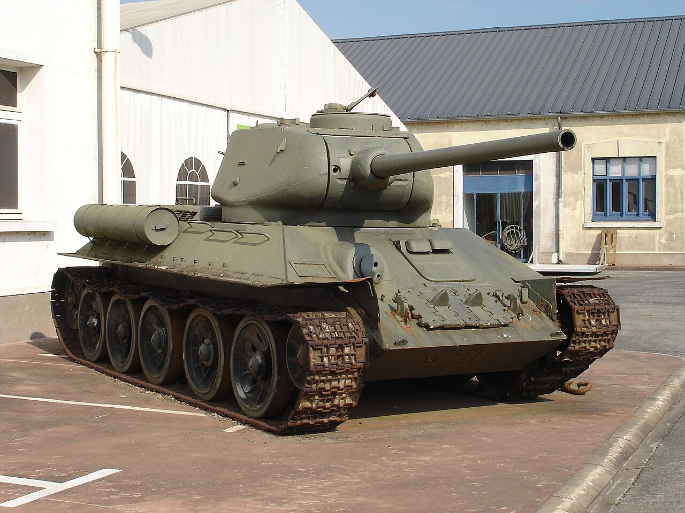
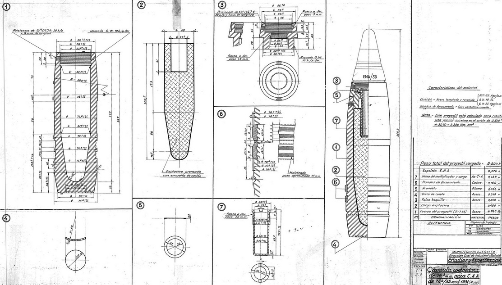
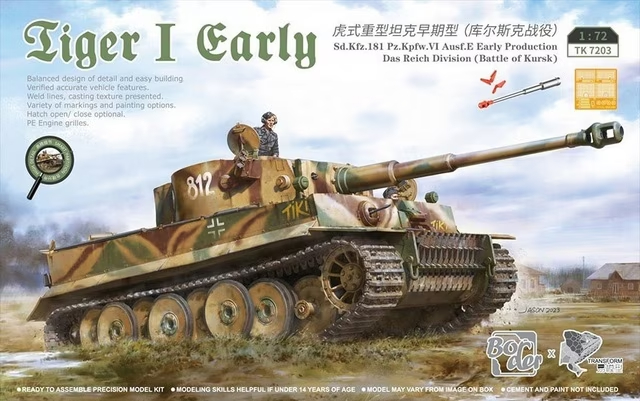

Los tanques del inicio
Al comenzar el conflicto, la doctrina había cambiado. Tanques ligeros como el Panzer I y Panzer II alemanes lideraron la "guerra relámpago" en Polonia y Francia. Sin embargo, el tanque que definió la guerra fue el T-34 soviético, que introdujo el blindaje inclinado, rebotando proyectiles y revolucionando el diseño mundial.

Los Cañones
La potencia de fuego escaló rápidamente. De pequeños cañones de 37mm pasaron a monstruosidades como el mítico Cañón antiaéreo FlaK de 88 mm adaptado para los tanques pesados alemanes. Este cañón podía destruir tanques aliados a más de 2 kilómetros de distancia antes de que siquiera pudieran acercarse a disparar.

El Tanque más temible
El Panzer VI Tiger (Tiger I) es, sin duda, la leyenda más temida. Su blindaje frontal de 100mm lo hacía casi invulnerable a los cañones de los tanques M4 Sherman aliados. Cuando los soldados aliados reportaban la presencia de un Tiger en el campo de batalla, a menudo se requería apoyo de artillería pesada o ataques aéreos para neutralizarlo.

La crueldad de la Guerra
La desesperación por romper las líneas defensivas llevó a la creación de vehículos especializados con propósitos aterradores. El uso de fuego líquido para calcinar tropas atrincheradas o maquinaria diseñada para despedazar el suelo demostraron un nivel de brutalidad psicológica y física extremo. Tras la guerra, la comunidad internacional tuvo que restringir severamente el uso de este tipo de armamento incendiario contra personal humano.
ARCHIVOS CLASIFICADOS: ARMAS ILEGALES